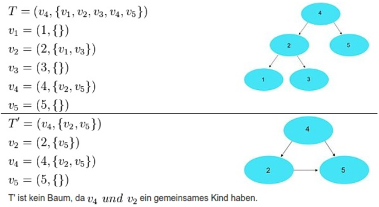
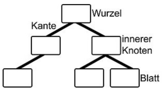
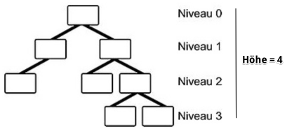
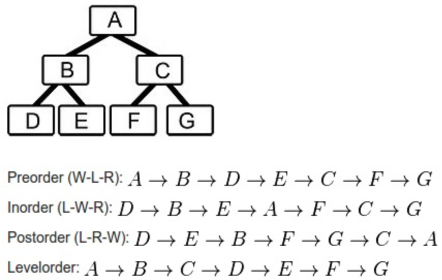
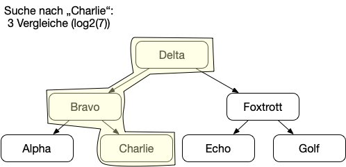
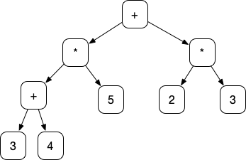
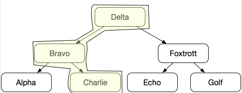

{% extends "../_base_template.html" %}
{% block title %}Lektion 16 - Bäume{% endblock %}

{% block sections %}
<section data-markdown>
<textarea data-template>
<i class="fas fa-graduation-cap"></i> Lektion 16 - Datenstruktur "Tree" (Baum)
=============================

**Ziele:**

* Sie wissen, was ein Baum, eine Baumstruktur ist und wo er in Programmiersprachen eingesetzt wird.
* Sie können die einzelnen Elemente eines Baumes benennen und richtig einordnen
* Sie können selber eine Baumstruktur aufbauen und traversieren

</textarea>
</section>

<section data-markdown>
<textarea data-template>
<i class="fas fa-graduation-cap"></i> Bäume
=============================

Bäume werden in der Informatik als Datenstruktur sehr häufig eingesetzt. Beispielsweise macht die
Collections API ebenfalls davon gebrauch:

* Die Map-Klasse **TreeMap** hält seine Elemente in einem Baum sortiert vor
* ebenso die Set-Klasse **TreeSet** verwendet intern einen Baum für die Verwaltung der Elemente.

Bäume sind immer dort zu finden, wo hierarchische Strukturen verwendet werden, und finden viele Anwendungen:

* zum Abbilden von Hierarchien (Bsp: Organigramm)
* zum schnellen Auffinden von sortierten Elementen (Binary Search Tree)
* zum Indizieren von Datenbank-Daten (auch hier wieder: Binary Search Tree)
* Menustrukturen
* ...

</textarea>
</section>

<section data-markdown>
<textarea data-template>
<i class="fas fa-graduation-cap"></i> Bäume
=============================

Bäume bestehen aus **Knoten** (mit **Werten**) und  **Kanten**:


</textarea>
</section>

<section data-markdown>
<textarea data-template>
<i class="fas fa-graduation-cap"></i> Bäume
=============================

Weitere Begrifflichkeiten:



* die **Wurzel** ist der Start- oder Einstiegsknoten.
* die **Kante** stellt die Verbindung zwischen einem Elternknoten und einem Kindknoten dar.
* ein **innerer Knoten** ist ein Knoten, welcher sowohl ein Eltern- sowie (mehrere) Kindknoten hat.
* Ein **Blatt** ist ein Knoten, welcher nur einen Elternknoten hat.



* die **Höhe** des Baumes ist definiert durch die längste Knoten-Kette, hier 4.
* die einzelnen **Ebenen** werden **Niveau** genannt.
</textarea>
</section>

<section data-markdown>
<textarea data-template>
<i class="fas fa-graduation-cap"></i> Bäume
=============================

**Traversieren von Bäumen ("Abklappern" aller Elemente):**

Bäume können auf verschiedene Arten durchlaufen, traversiert werden:



* **Preorder**: erst wird das Elternelement prozessiert, dann die linke Seite, dann die rechte Seite.
* **Inorder**: erst wird die linke Seite, dann das Elternelement, dann die rechte Seite prozessiert.
* **Postorder**: Links, Rechts, dann Elternelement
* **Levelorder**: Jedes Niveau wird von links nach rechts durchgelaufen.
</textarea>
</section>

<section data-markdown>
<textarea data-template>
<i class="fas fa-graduation-cap"></i> Bäume - Nutzen: Suchbäume
=============================

Ein **Suchbaum** hält seine Elemente intern geordnet: Alle Elemente **links** vom Elternknoten sind kleiner, alle elemente **rechts** des Elternknoten sind grösser als der Elternkonten. Dies macht die Suche nach Elementen extrem schnell (O(log2(n))):


</textarea>
</section>

<section data-markdown>
<textarea data-template>
<i class="fas fa-graduation-cap"></i> Bäume - Nutzen: Termbaum
=============================

Im Compilerbau und in Rechnern / Formeleditoren kommen vielmals **Termbäume** zur Anwendung:

die Formel:

`((3+4) * 5) + (2*3)`

kann auch als Baum abgebildet werden:



Frage: Wie durchlaufen / prozessieren Sie diesen Baum (welche Traversier-Art benutzen Sie), um das Ergebnis der Formel zu erhalten?

<!-- .element: class="fragment" --> Antwort: mittels **Postorder**: Beide Teilbäume (linke und rechte Seite) eines Knoten werden prozessiert / ausgerechnet, dann mit dem Operator verknüpft. Spielen wir dies durch!
</textarea>
</section>

<section data-markdown>
<textarea data-template>
<i class="fas fa-graduation-cap"></i> Bäume - Grundstruktur Tree-Node
=============================

Bäume als Datenstrukturen umzusetzen sind sehr einfach: Sie funktionieren sehr ähnlich wie eine "Linked List".
Faktisch ist eine Linked List nichts anderes als ein Baum, welcher jeweils nur an einer Seite (z.B. "Rechts") ein Element angehängt hat.

Wir kennen also bereits folgende Struktur von der LinkedList (hier: Double Linked List):

```java
class ListNode {
    ListNode next;
    ListNode prev;
    Object data;
}
```

Unsere TreeNode sieht ganz ähnlich aus:

```java
class TreeNode {
    TreeNode left;
    TreeNode right;
    Object data;
}
```

Sehen Sie den Unterschied?
</textarea>
</section>

<section>
<section data-markdown>
<textarea data-template>
<i class="fas fa-graduation-cap"></i> Bäume - Umsetzung TreeNode
=============================

Als Übung wollen wir nun die TreeNode-Klasse implementieren, und damit folgenden Baum definieren:

Wir haben gesehen, dass ein Baum-Knoten relativ simpel umzusetzen ist:
```java
class TreeNode {
    TreeNode left;
    TreeNode right;
    String data;
    public TreeNode(String data,TreeNode left, TreeNode right) {
        this.left = left; this.right = right; this.data = data;
    }
}
```

Aufgaben:

* Implementieren Sie die oben gezeigte TreeNode!
* Erstellen Sie folgenden Baum:


Nodes erstellen Sie so:

```java
TreeNode alpha = new TreeNode("Alpha",null,null);
TreeNode charlie = new TreeNode("Charlie",null,null);
TreeNode Bravo = new TreeNode("Bravo",alpha,charlie);
```

Tipp: Um Bäume zu durchlaufen verwenden Sie am besten einen rekursiven Algorithmus!

Wir müssen also eine Methode erstellen, um den Baum **zu durchlaufen**: Haben Sie eine Idee, **welches Programmier-Paradigma uns dabei helfen kann?**

</textarea>
</section>
<section data-markdown>
<textarea data-template>
<i class="fas fa-graduation-cap"></i> Bäume - Umsetzung TreeNode
=============================

Dieses Problem kann sehr einfach mit **Rekursion** gelöst werden! Wir prozessieren jede Node in **In-Order**-Reihenfolge, und geben die
weitere Prozession der Kindknoten "nach unten" weiter.

```java
// Diese Methode soll den Baum durchlaufen und in Pre-Order ausgeben:
public void inorderPrint(TreeNode aktuelleNode) {
    // ... und nun? wie weiter? Hier sollte irgendwie die Ausgabe und der rekursive Aufruf passieren...
}

inorderPrint(alpha);
```

Versuchen Sie dies nun selbständig umzusetzen:

1. Erstellen Sie eine TreeNode-Klasse, um die oben gezeigte Struktur als Strings aufzunehmen
2. Erstellen Sie den Baum in Java (manuell)
3. Programmieren Sie die `inorderPrint`-Methode aus, sodass Sie den oben gezeigten Output erhalten! Versuchen Sie, eine rekursive Lösung zu finden! Sie ist sehr einfach!
4. Erstellen Sie eine Methode `int count()` in der Klasse TreeNode, welche die ANZAHL der Nodes in einem Baum (die aktuelle Node ist die Wurzel) zurückgibt!

Ausgabe sollte lauten:

```
Alpha
Bravo
Charlie
Delta
Echo
Foxtrott
Golf
```

</textarea>
</section>
</section>

<section>
<section data-markdown>
<textarea data-template>
<i class="fas fa-flask"></i> Bäume - Praxis
=============================

Wir wollen nun einen Termbaum implementieren - welcher seine Rechnung auf den Bildschirm ausgeben kann


**Die Ausgabe des Programms soll lauten:** `(((3+4)*5)+(2*3))`

</textarea>
</section>

<section data-markdown>
<textarea data-template>
<i class="fas fa-flask"></i> Bäume - Praxis
=============================

**Die Ausgabe des Programms soll lauten:** `(((3+4)*5)+(2*3))`

** Was benötigen wir dazu? **

Unsere TreeNode muss also Strings aufnehmen können, und einen Konstruktur zur Vereinfachung implementieren:

```java
class TreeNode {
    public TreeNode left;
    public TreeNode right;
    public String data;

    public TreeNode(String data, TreeNode left, TreeNode right) {
        this.data = data; this.left = left; this.right = right;
    }
}
```

<i class="far fa-hand-point-right"></i> Ideen für eine konkrete Implementation sind gefragt! Wer versuchts?

Versuchen Sie nun selbständig:

* die TreeNode zu implementieren
* einen Baum, welchen den Term oben abbildet, abzufüllen (durch Bilden von TreeNodes)
* eine Logik / Prozedur zu erstellen, welche den Baum durchläuft und die Formel ausgibt!
* eine Logik / Prozedur zu erstellen, welche den Baum durchläuft **und die Formel ausrechnet!**

<i class="far fa-hand-point-right"></i> Ich werde die komplette Lösung auf Moodle publizieren.

</textarea>
</section>
</section>
 {% endblock %}
